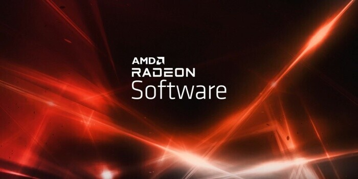

A 21.12.1-es verziójú, frissített Adrenalin 2020 családba sorolt drivercsomag a 64 bites Windows 10 és 11
operációs rendszert támogatja, és a Radeon RX 400, 500, 600, Vega, VII, Pro Duo, 5000, 6000, illetve Pro
szériás grafikus kártyákhoz, továbbá a legalább negyedik generációs GCN dizájnt használó mobil
Radeonokhoz telepíthető, illetve támogatja még a Vega architektúrára épülő IGP-vel rendelkező Ryzen és
Athlon APU-kat is. A notebookokhoz az AMD általános terméktámogatást kínál, vagyis a csomag telepíthető
a megfelelő hardverekkel rendelkező noteszekre, de az egyedi, specifikus funkciókért nem felelnek,
ezekhez továbbra is külön terméktámogatás szükséges az adott rendszer gyártójától.